1 操作场景
使用BLE蓝牙模拟一款智能灯，配合“腾讯连连”小程序实现设备接入，物联网开发平台可以远程控制灯的亮度、颜色、开关，并实时获取智能灯上报到开发平台的数据。
本文档主要指导您如何使用NRF52832模组在物联网开发平台创建智能灯产品并通过手机接入。
2 前提条件
为了通过下面的步骤快速理解该业务流程，需要做好以下准备工作： - 申请物联网开发平台服务。 - 准备一块NRF52832开发板。 - 下载最新版本代码。 - 安装python、JLink驱动程序。
3 操作步骤
3.1 控制台操作
3.1.1 新建项目
- 登录 物联网开发平台控制台，选择【新建项目】。
- 在新建项目页面，填写项目基本信息，完成后点击保存。
- 项目名称：输入“智能灯演示”或其他名称。
- 项目描述：按照实际需求填写项目描述。
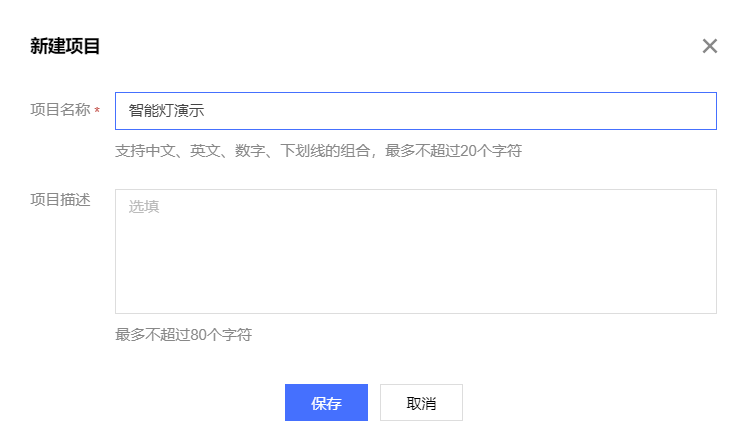
3.1.2 新建产品
- 进入该项目的产品列表页面，单击【新建产品】。
- 在新建产品页面，填写产品基本信息，完成后点击保存。
- 产品名称：输入“蓝牙智能灯”或其他产品名称。
- 产品类型：选择“智慧生活—电工照明—灯”。
- 设备类型：选择“设备”。
- 认证方式：选择“密钥认证”。
- 通信方式：选择“BLE”。
- 其他选项保持默认。
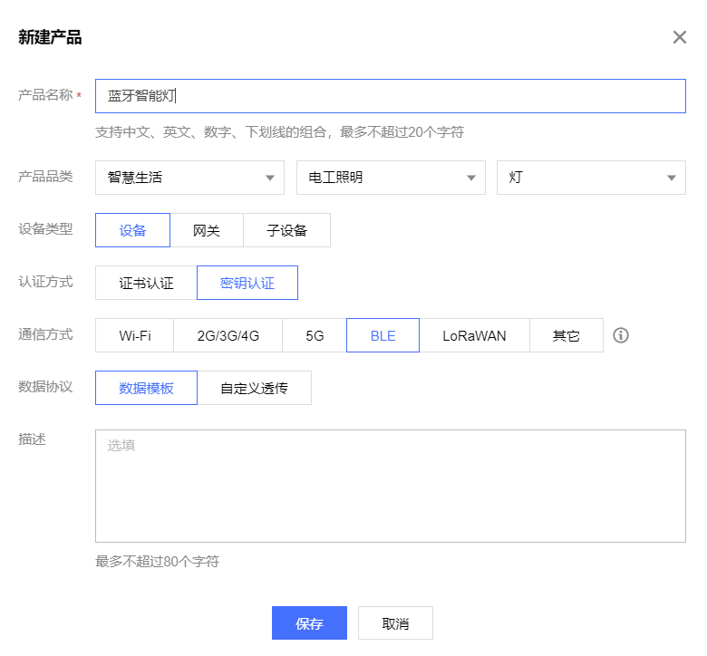
3.1.3 创建数据模板
-
打开刚刚创建的【蓝牙智能灯】产品。
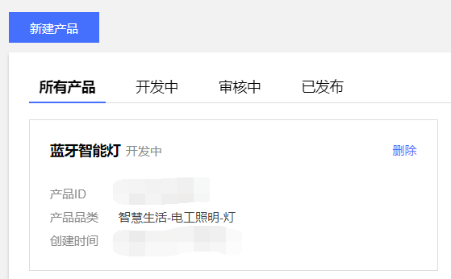 -
选择【数据模板】，点击【导入JSON】。
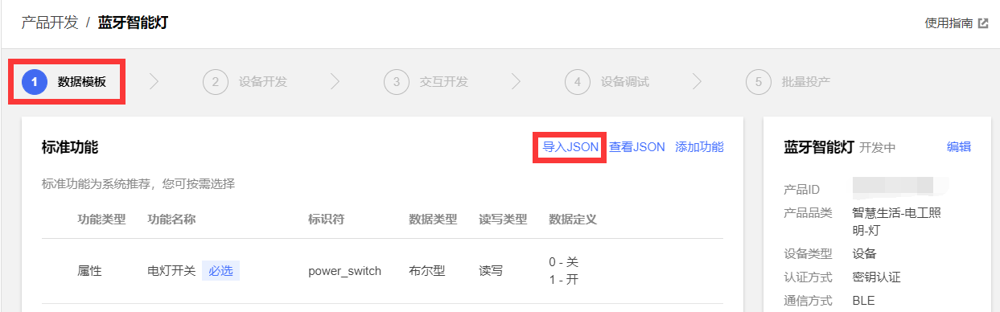 -
打开代码中的
examples\nimble_llsync\date_templatenrf52832.json，如果出现乱码请将您的编辑器修改为utf8编码，将文件中的代码粘贴进来，点击【导入】。
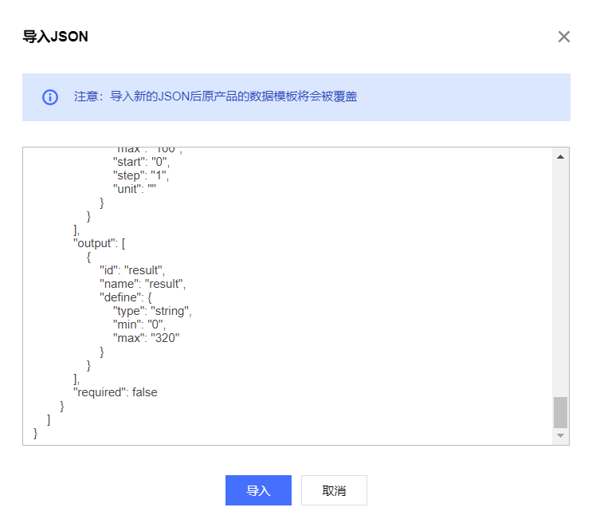
3.1.4 交互开发配置
配置产品在小程序端的控制面板、配网引导、快捷入口，若不配置则使用系统默认配置。
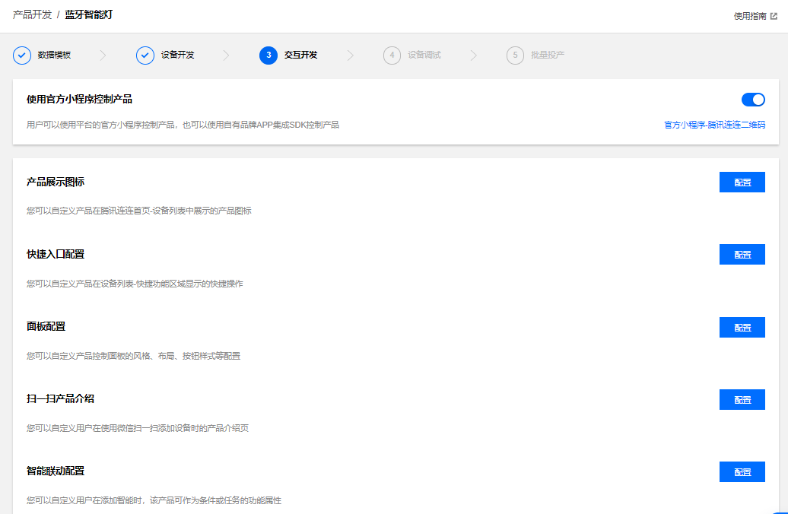
3.1.5 新建设备
在设备调试页面中，单击【新建设备】，输入设备名“ble_device_01”或其他设备名称，点击【保存】。
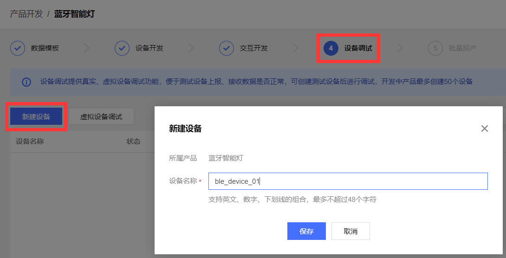
3.2 设备端操作
3.2.1 硬件简介与连接
开发板实物如下：
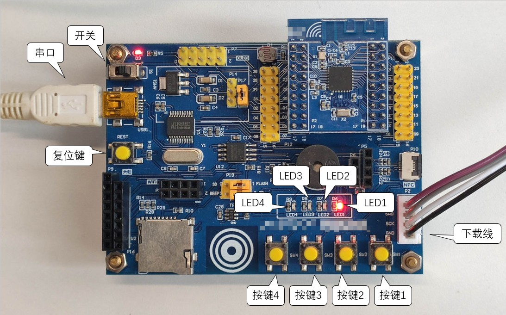
指示灯作用如下 - LED1: 开关 - LED2: action - LED3: replay - LED4: 未使用
- 使用USB线连接开发板左上角串口。
- 使用JLink连接开发板右下角下载线接口。
- 打开左上角电源开关。
- 打开设备管理器，确保串口和JLink能够正常识别，若不能识别请重新安装驱动。
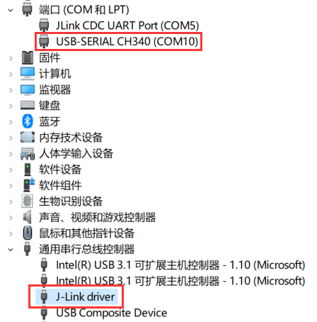
3.2.2 准备软件环境
- 新买到的nrf52832开发板可能已经烧写了 NORDIC 官方蓝牙协议栈，需要进行擦除，否则会导致下载失败、程序异常或其他问题
- 启动 JFlash.exe，选择 File -> New project
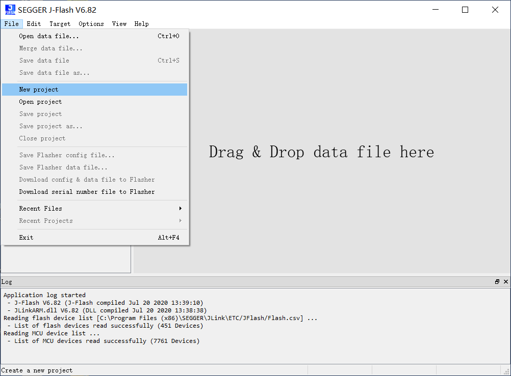 - 点击省略号添加设备
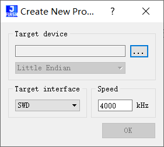 - 在“Device”中输入nrf52832，选择具体芯片型号，例程中使用的为nRF52832_xxAA
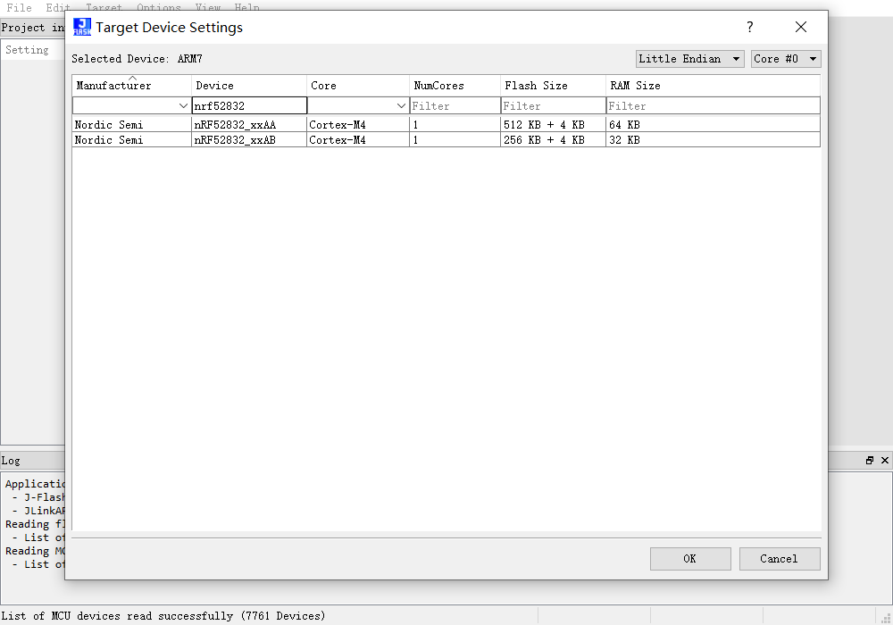 - 选择 Target -> Manual Programming -> Erase Chip 擦除芯片
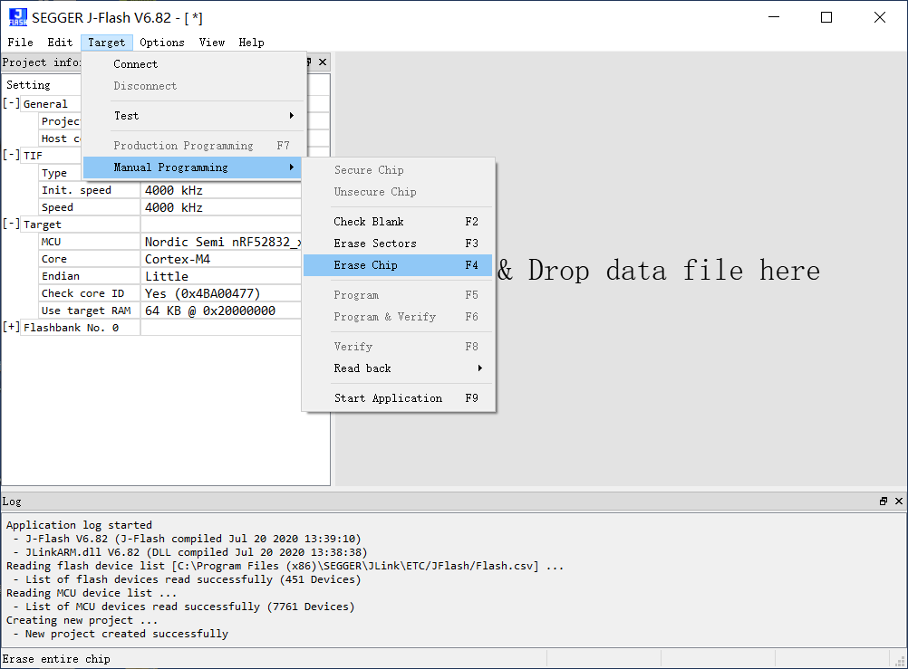 - 擦除完成后即可继续进行之后的开发
3.2.3 代码修改与烧录
- 打开工程
board\Nordic_NRF52832\KEIL\llsync\TencentOS_tiny.uvprojx。 - 打开文件
ble_qiot_import.c，找到以下三个宏并修改为你自己的设备信息。
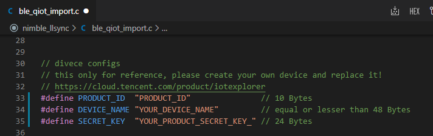 - 在【设备调试】页面中选择【设备信息】子页面，将【设备名称】、【设备密钥】、【产品ID】分别填入
DEVICE_NAME,SECRET_KEY,PRODUCT_ID。
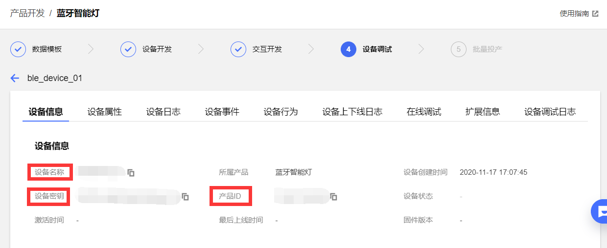 - 在
ble_qiot_ret_status_t ble_qiot_explorer_init(void)中或其他合适的地方修改日志等级ble_qiot_set_log_level(BLE_QIOT_LOG_LEVEL_DEBUG);，以便开发调试。 - 编译下载并运行。
3.3 腾讯连连小程序调试
- 微信主页面下拉并搜索【腾讯连连】小程序。
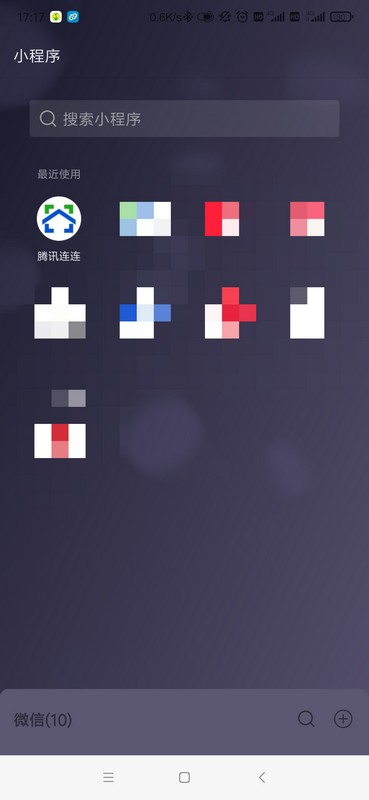 - 点击下方的【加号】添加设备。
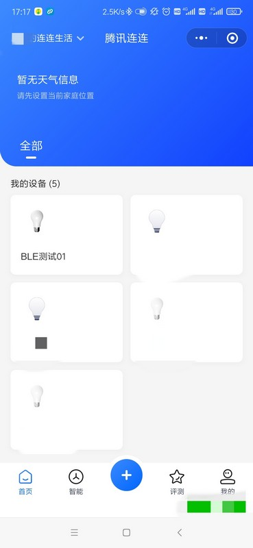 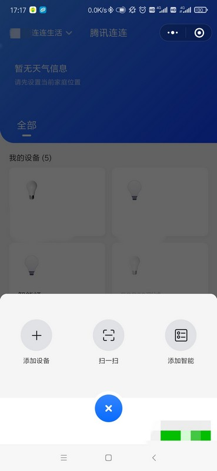 - 待扫描到蓝牙设备后点击右侧的【连接】。
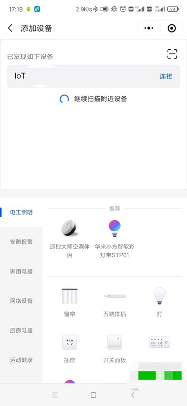 - 在【我的设备】中打开刚刚添加的蓝牙设备。
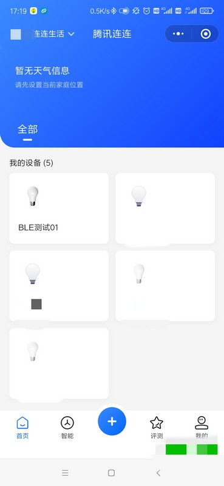 - 点击右侧的【立即连接】连接设备。
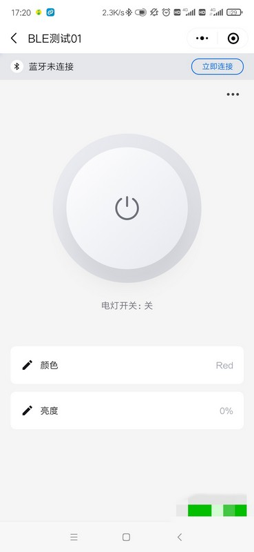 - 连接成功后点击【电灯开关】，可以看到开发版上【LED1】随之变化。
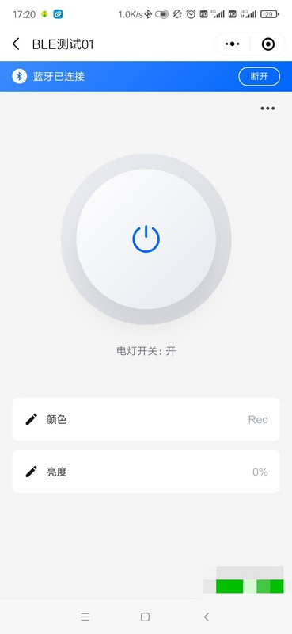 - 点击【亮度】或【颜色】按钮进行设置
- 查看串口打印，可以看到亮度、颜色设置成功
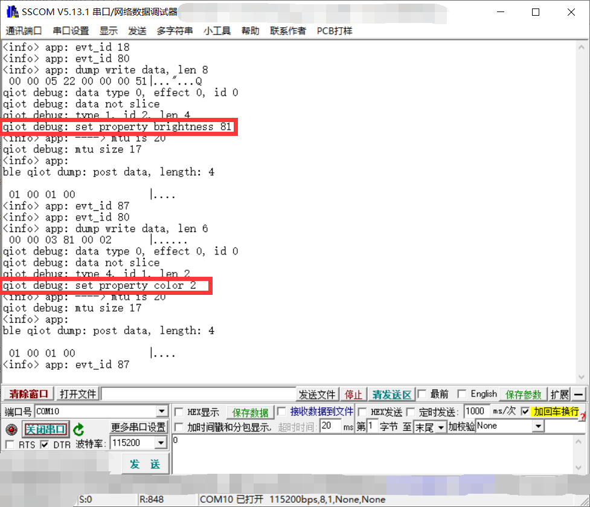
4 Q&A
Q: 实际产品中如何处理设备信息？
A: 例程中 DEVICE_NAME, SECRET_KEY, PRODUCT_ID 直接写在代码中，产品中应保存在Flash中，同时修改ble_qiot_import.c中ble_get_product_id(),ble_get_device_name(),ble_get_psk()三个函数。
Q: LLSync SDK 需要多大的 Flash 来保存配置信息？
A: 目前只需要不到32字节。
Q: 如果开发其他 BLE 芯片，有什么注意事项？
A: components\connectivity\qcloud_iot_explorer_ble\inc\ble_qiot_import.h 为用户需要移植适配的接口，与蓝牙协议栈相关的接口在ble_qiot_import.c中已经完成了适配，用户仅需根据实际产品要开发ble_write_flash(),ble_read_flash()等接口。